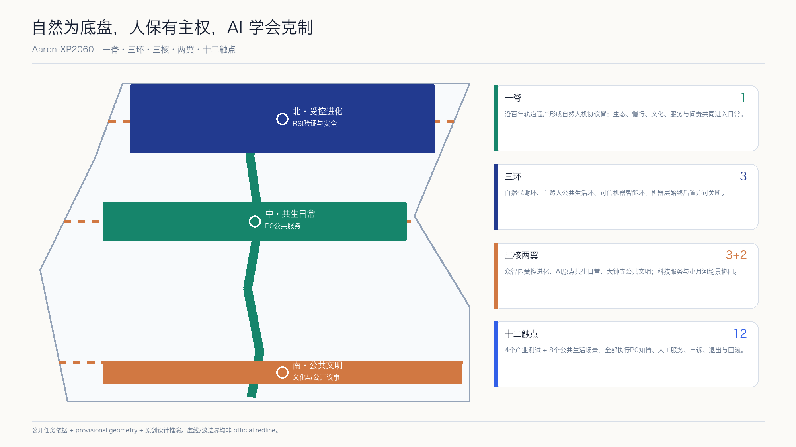
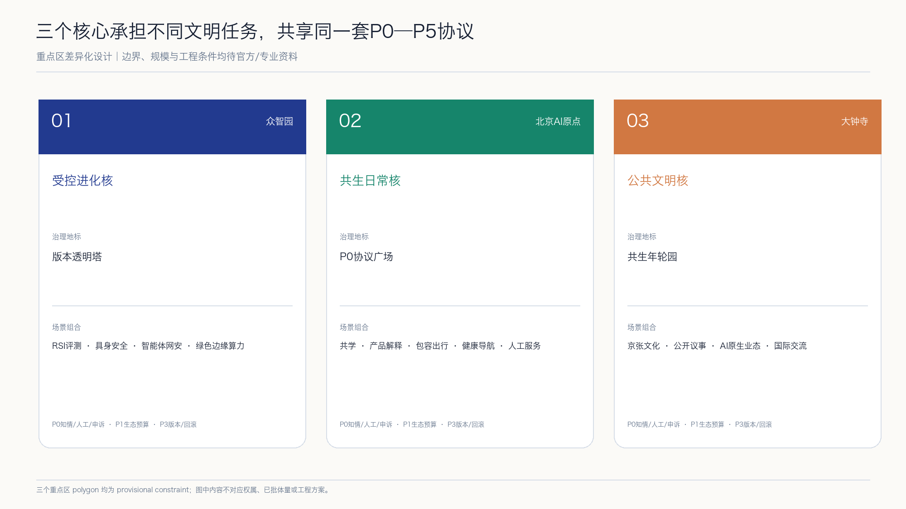
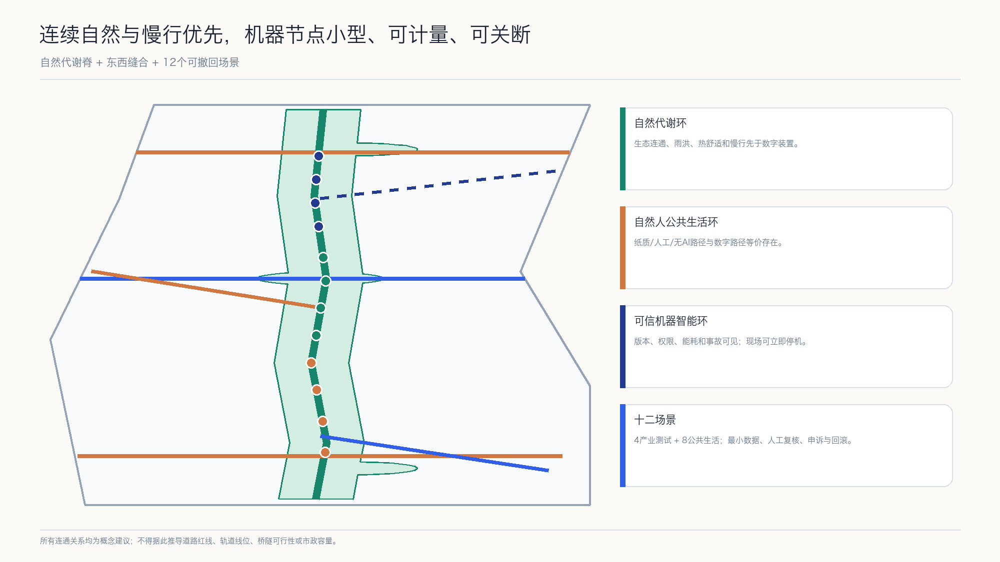
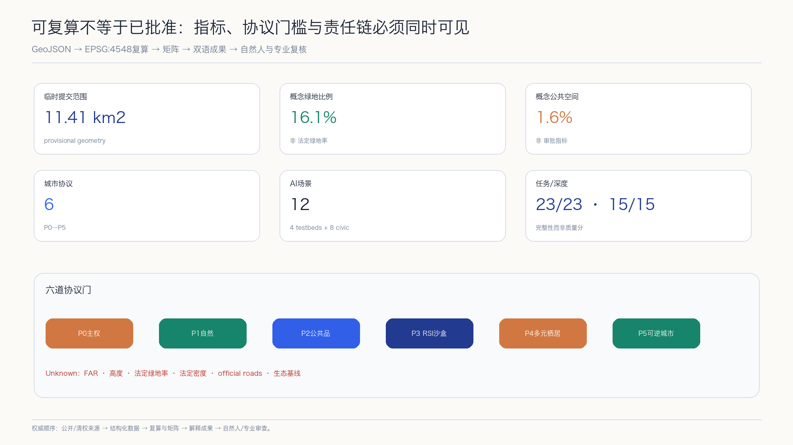

自然人主权
知情、拒绝、人工服务、申诉、停机

一套面向2060的城市协议：机器可以学习和进化，但不能自行扩权；自然预算、自然人权利和可回滚机制共同决定城市技术的边界。
AI生成概念表达｜非现状照片、地图、红线或工程图
知情、拒绝、人工服务、申诉、停机
水、能耗、碳、热与生物多样性预算
来源、责任、开放接口、审计
版本、能力上限、红队、批准、回滚
高数字、低数字、AI-off等价通道
存量优先、模块化、可撤除试点

版本透明塔｜四类产业测试验证
P0协议广场｜人工与AI-off服务
共生年轮园｜文化与公开议事

最小数据 · 人工复核 · 申诉 · 退出 · 回滚
最小数据 · 人工复核 · 申诉 · 退出 · 回滚
最小数据 · 人工复核 · 申诉 · 退出 · 回滚
最小数据 · 人工复核 · 申诉 · 退出 · 回滚
最小数据 · 人工复核 · 申诉 · 退出 · 回滚
最小数据 · 人工复核 · 申诉 · 退出 · 回滚
最小数据 · 人工复核 · 申诉 · 退出 · 回滚
最小数据 · 人工复核 · 申诉 · 退出 · 回滚
最小数据 · 人工复核 · 申诉 · 退出 · 回滚
最小数据 · 人工复核 · 申诉 · 退出 · 回滚
最小数据 · 人工复核 · 申诉 · 退出 · 回滚
最小数据 · 人工复核 · 申诉 · 退出 · 回滚


任务依据使用公开公告、仓库 site package、agent taskbook 与本地标准快照。文学、RSI历史论文、NIST、UNESCO和七个全球案例分别只用于思想、历史、治理或机制比较，不替代场地和审批证据。
official polygons、控规、权属、现状建筑、道路、轨道、市政、文保、生态和公共设施底数待补。所有空间落地内容均为概念建议或供专业团队深化的参考方案。